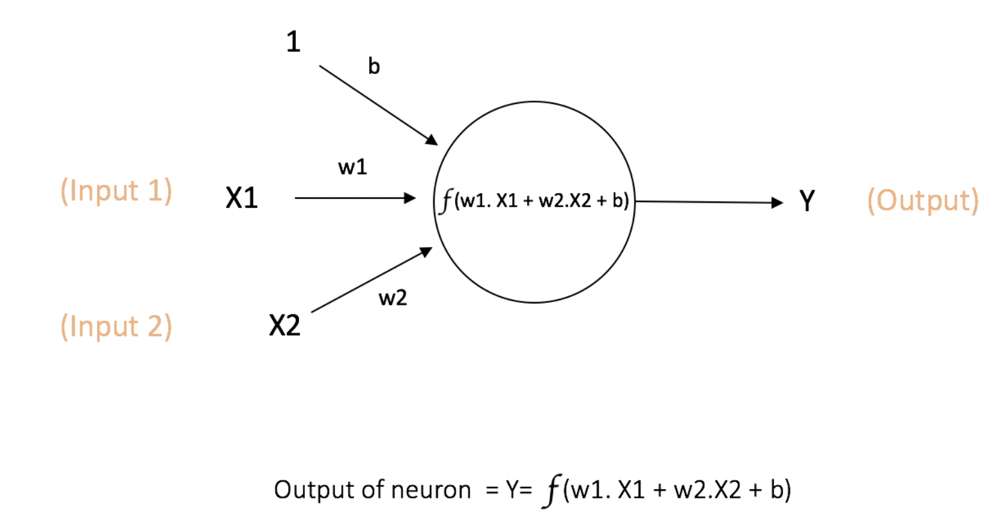
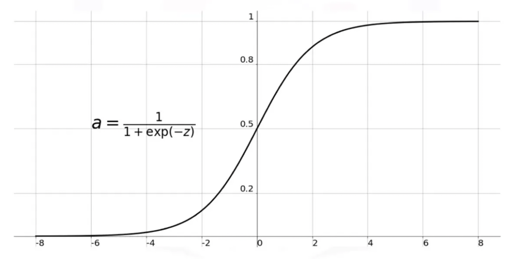
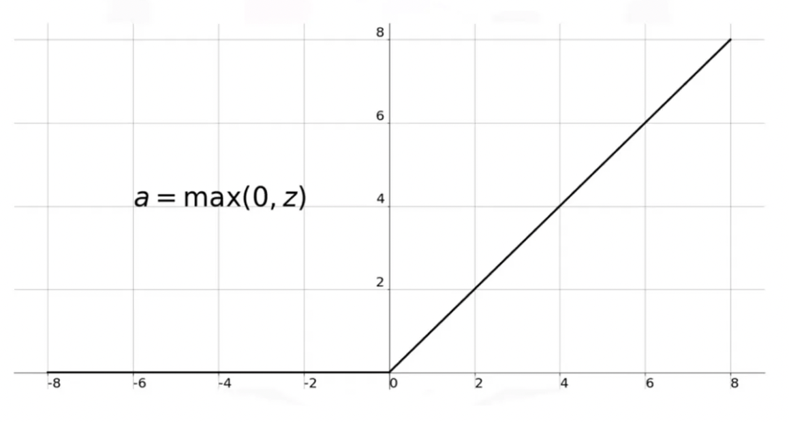

What is Neural Network?
Published on Feb 11, 2022
AI vs ML vs DL
Understanding neural networks is key in the world of AI. These networks, inspired by the human brain, play a pivotal role in machine learning, powering applications like image recognition and natural language processing. While terms like AI, ML, and DL are often used interchangeably, they have unique meanings and uses. Let's explore the differences among them.
AI (Artificial Intelligence)
AI is the broader goal of creating intelligent machines, involving software that replicates human-like intelligence through predefined rules. Examples include virtual assistants like Siri, self-driving cars, and more. AI automates tasks, reasoning, and learning from data. It includes subsets like Machine Learning, Robotics, Natural Language Processing, Machine Vision, and Expert Systems.

ML (Machine Learning)
Machine Learning (ML) is a part of AI where algorithms learn from data instead of following fixed rules. Unlike traditional AI, which uses predefined rules, ML algorithms find patterns, make predictions, and offer suggestions based on past experiences. For instance, Netflix suggests shows based on your watching history, and fraud detection spots unusual transactions. ML improves with more data, letting systems learn and grow from data-driven insights.
DL (Deep Learning)
DL, a subset of ML, employs deep neural networks to learn intricate patterns from data. Inspired by the brain, these networks autonomously excel at complex feature learning. Examples: CNN for image analysis, RNN for sequences, GAN for creative generation.
Perceptron vs Neuron
Perceptron is an early type of neural network, that always produced binary output based on a threshold. Thus it is also known as a Linear Binary Classifier. Neurons is a generalisation of the idea of perceptron where the output is not necessarily binary, and it could employ a non-linear activation function.
Deep Dive into Neural Network
In software engineering, think of artificial neural networks like a chain of circles. These circles represent neurons, and they come in three types: input (red), hidden (blue), and output (green).
Input neurons take numeric data, process it, and pass it to the next layer using special math functions. They also use preset weights to adjust the data along the way.
Hidden neurons get data from input or other hidden neurons, do their own math magic, and send it to the next layer. Again, they use weights to fine-tune the data.
Output neurons process the information and provide results, like saying "yes" or "no" or guessing what's in an image. These results can be used as final answers or sent to another neural network.

Forward Propagation
Forward propagation is like sending a message through a network. You start with input data and move it forward, layer by layer. Each layer does some math on the data. Think of it as passing the data to a friend, and they make it better by doing some calculations. In each layer, two important things happen. First, we calculate a weighted sum, which is like adding up the data with special numbers. Then, we use these special numbers to make the data flow in a non-straight path. It's like adding a twist to the story. This whole process helps the network make better predictions or decisions. When we go backward from the Output to the Input layer, it's called Backward Propagation.
Backward Propagation
Backpropagation is closely tied to forward propagation in neural networks. Forward propagation is the initial step where the network processes data from input to output, making predictions. During this process, the network may produce errors in its predictions. Backpropagation comes into play after the forward propagation is complete. It works backward through the network, using the errors detected in the forward pass to adjust the network's internal settings (weights) from output to input. This iterative process of forward and backward passes helps the network improve its accuracy over time, making it a key component of neural network training. In simple terms, forward propagation makes predictions, and backpropagation corrects and refines those predictions to make the network better.
Gradient Descent
Gradient descent, a fundamental component of training neural networks, plays a crucial role in refining their predictive abilities. It relies on the insights provided by backpropagation to calculate gradients, which essentially guide the network towards the optimal weight configuration that minimizes the cost function. The learning rate, a key parameter in gradient descent, determines the step size taken along the gradient, influencing how swiftly the network converges to the best weights. This dynamic interplay between backpropagation and gradient descent ensures neural networks continually enhance their accuracy by iteratively adjusting their internal parameters to reduce prediction errors during training.

Cost Function
A cost function is a crucial tool in assessing a machine learning model's performance, quantifying the disparity between predicted and expected values as a single number. Depending on the problem, cost functions can take various forms and aim to be either minimized or maximized. They play a vital role in algorithms that use gradient descent for parameter optimization, requiring differentiability. For instance, consider a linear regression problem where the cost function could be the mean squared error, measuring the average squared difference between predicted and actual values. After training a model, the need arises to evaluate its performance, especially when accuracy metrics fall short in guiding improvement. The cost function steps in to identify the sweet spot between undertraining and overtraining, helping to optimize the model's performance. In essence, cost functions provide a roadmap for improvement in the model's understanding of the input-output relationship, ensuring it finds the most accurate and valuable patterns in the data.

Cost functions play a critical role in machine learning. They don't always need to square errors, but squaring errors is common because it aids in optimization. It makes the cost function smoother, more mathematically tractable, and sensitive to outliers. However, different problems may require different cost functions. For instance, in classification tasks, we often use cross-entropy to assess how well a model predicts probabilities. Below are some examples of cost functions used in various machine learning scenarios:
| Cost Function | Typical Use Scenario |
|---|---|
| Mean Squared Error Loss | Commonly used in regression tasks to measure the average squared difference between predicted and actual values. |
| Mean Squared Logarithmic Error Loss | Useful for regression tasks when you want to weigh errors differently, often used in financial modeling. |
| Mean Absolute Error Loss | Another choice for regression problems when you want to measure the average absolute difference between predicted and actual values. |
| Binary Cross-Entropy | Typically employed in binary classification problems to measure how well the model predicts probabilities for two classes. |
| Hinge Loss | Commonly used in support vector machines (SVMs) and binary classification problems to encourage correct classification with a margin. |
| Squared Hinge Loss | A variant of hinge loss, useful in SVMs for binary classification with squared margins. |
| Multi-Class Cross-Entropy Loss | Typically used in multi-class classification problems to measure the difference between predicted and actual class distributions. |
| Sparse Multiclass Cross-Entropy Loss | Similar to multi-class cross-entropy but suited for cases where classes are sparse or imbalanced. |
| Kullback Leibler Divergence Loss | Used in scenarios where you want to measure the difference between two probability distributions, often seen in generative models. |
Selecting the right cost function is crucial for effective model training, and these examples demonstrate the diversity of cost functions available in machine learning.
Activation Function
An activation function in a neural network decides whether a neuron should be activated or not by calculating the weighted sum and adding bias to it. Its main purpose is to introduce non-linearity into the output of a neuron.
In a neural network, we update the weights and biases of neurons based on errors at the output using a process known as back-propagation. Activation functions play a crucial role in this process by enabling the network to learn complex representations. Without them, a neural network would essentially behave like a linear regression model.
There's a reason why we need non-linear activation functions. A neural network without them is essentially just a linear model. Nonlinear activation functions allow the network to learn and perform more complex tasks. Here are some examples of commonly used activation functions and their typical scenarios:
| Activation Function | Typical Use Scenario |
|---|---|
| Sigmoid Function | Often used in binary classification problems because it squashes the output between 0 and 1, resembling a probability. |
| Hyperbolic Tangent (tanh) Function | Similar to the sigmoid but squashes output between -1 and 1, making it suitable for zero-centered data. |
| Rectified Linear Unit (ReLU) Function | Widely used in deep learning due to its simplicity and efficiency. It is effective in scenarios where sparse representations are useful. |
Sigmoid
Hyperbolic Tangent

ReLU
Regularization in Neural Network
One of the greatest challenges in neural network training is overfitting. When a neural network overfits, it performs exceptionally well on the training dataset but generalizes poorly to unseen test data. Regularization is a technique that helps to avoid overfitting. Below are some common regularization techniques:
| Regularization Technique | Brief Explanation |
|---|---|
| Early Stopping | Stops training when the model's performance on a validation dataset starts to degrade, preventing it from overfitting the training data. |
| L1 and L2 Regularization | Penalizes large weight values in the neural network, preventing it from becoming too complex and overfitting. |
| Data Augmentation | Expands the training dataset by applying various transformations to the existing data, reducing the risk of overfitting. |
| Additional Noise | Introduces random noise or perturbations to the input data or model parameters during training, making the model more robust. |
| Dropout | Randomly deactivates a fraction of neurons during each training step, preventing co-adaptation and improving generalization. |
Optimization in Neural Network
Optimizers are algorithms or methods used to adjust the attributes of your neural network, such as weights and learning rate, in order to minimize losses.
| Optimizer | Brief Explanation |
|---|---|
| Gradient Descent | The most fundamental optimization technique that uses gradients to iteratively adjust weights to minimize the loss function. |
| Stochastic Gradient Descent (SGD) | A variant of gradient descent that updates weights using a random subset of the training data at each iteration, often leading to faster convergence. |
| Mini-Batch Gradient Descent | Combines the benefits of both gradient descent and SGD by updating weights using small, random batches of training data. |
| Adam (Adaptive Moment Estimation) | An optimizer that adapts the learning rate for each parameter and combines the advantages of both momentum and RMSprop. |
| RMSprop (Root Mean Square Propagation) | An optimizer that adapts the learning rate for each parameter based on the magnitude of recent gradients. |
| Momentum | Enhances gradient descent by adding a fraction of the previous weight update to the current update, helping to overcome local minima. |
| Adagrad (Adaptive Gradient Algorithm) | Adapts the learning rates for each parameter based on the historical gradient information, benefiting from larger updates for infrequent parameters. |
References
https://towardsdatascience.com/what-the-hell-is-perceptron-626217814f53https://levity.ai/blog/difference-machine-learning-deep-learning
https://www.kdnuggets.com/2016/11/quick-introduction-neural-networks.html